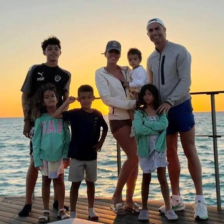
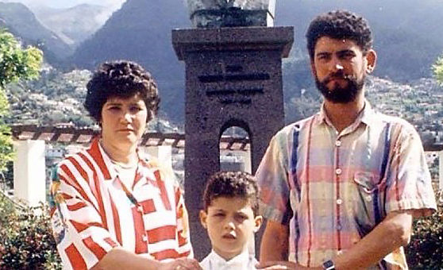

Cristiano Ronaldo
Nombre completo: Cristiano Ronaldo dos Santos Aveiro
Nacimiento: 5 de febrero de 1985
Lugar: Funchal, Madeira, Portugal
Altura: 1,87 m
Posición: Delantero
Club actual: Al-Nassr FC
Selección: Portugal
Historia
Cristiano Ronaldo es considerado uno de los mejores futbolistas de todos los tiempos. Su carrera comenzó en el Sporting de Portugal, donde destacó por su velocidad, técnica y capacidad goleadora desde muy joven. En 2003 fichó por el Manchester United, club donde ganó sus primeros grandes títulos internacionales y obtuvo su primer Balón de Oro. Sus actuaciones llamaron la atención del Real Madrid. En el conjunto español alcanzó el mejor nivel de su carrera, convirtiéndose en el máximo goleador histórico del club y conquistando numerosos títulos nacionales e internacionales. Posteriormente jugó en la Juventus, regresó al Manchester United y finalmente llegó al Al-Nassr, donde continúa demostrando su capacidad goleadora pese al paso de los años. Con la selección portuguesa conquistó la Eurocopa 2016 y la Liga de Naciones 2019, además de convertirse en el máximo goleador de selecciones nacionales.
Familia
Hijos
- Cristiano Ronaldo Jr.
- Eva María
- Mateo Ronaldo
- Alana Martina
- Bella Esmeralda

Pareja
Desde 2016 mantiene una relación con Georgina Rodríguez, modelo y empresaria, con quien comparte su vida y varios de sus hijos.
Padres
Su padre fue José Dinis Aveiro y su madre es María Dolores dos Santos Aveiro, quien ha sido uno de los mayores apoyos en toda su carrera deportiva.

Curiosidades
Cinco Balones de Oro
Ganó el premio al mejor jugador del mundo en cinco ocasiones.
Máximo goleador
Es el máximo goleador de la historia del fútbol profesional.
Disciplina
Su preparación física y alimentación son consideradas un ejemplo dentro del deporte.